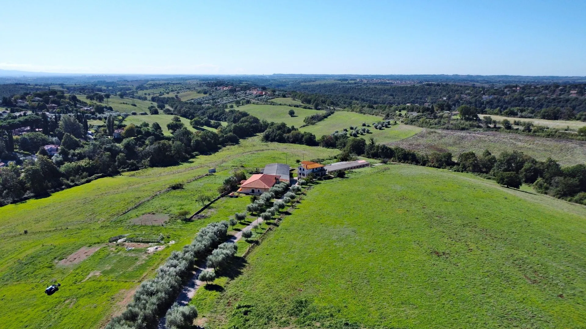
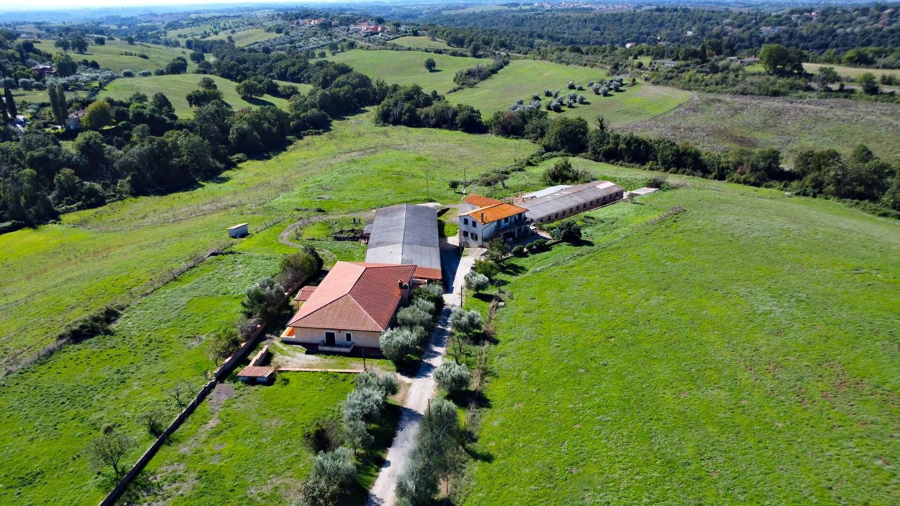
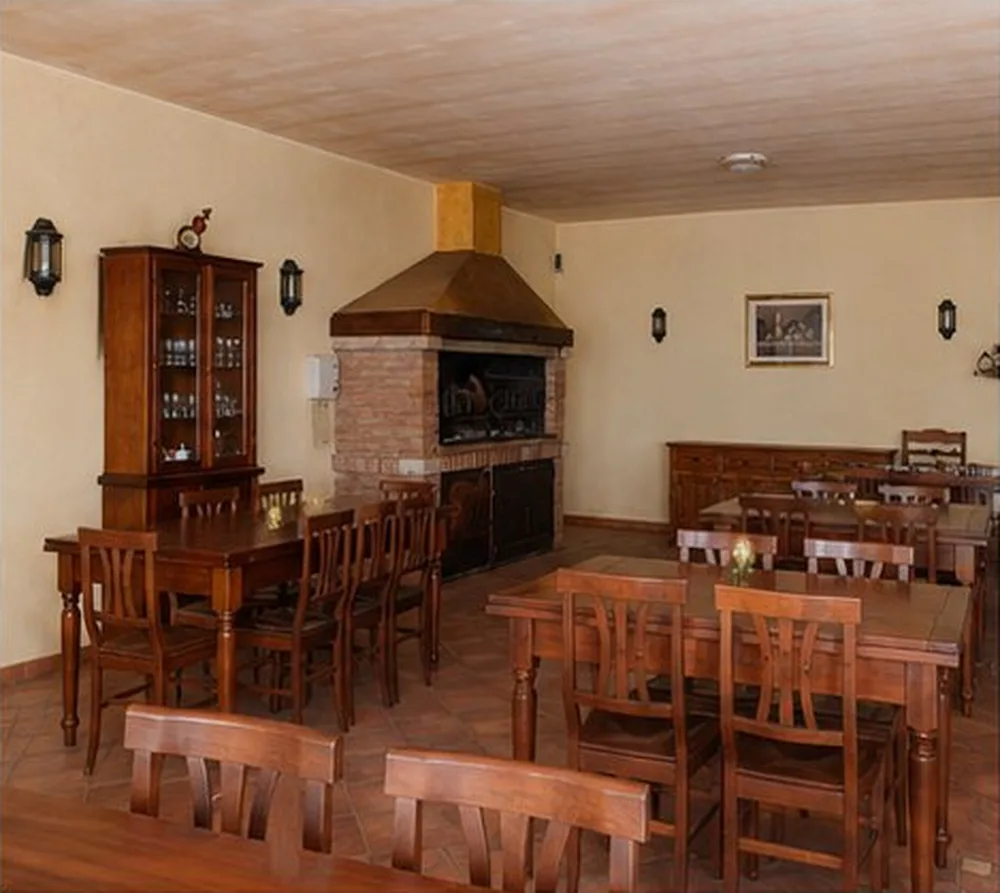
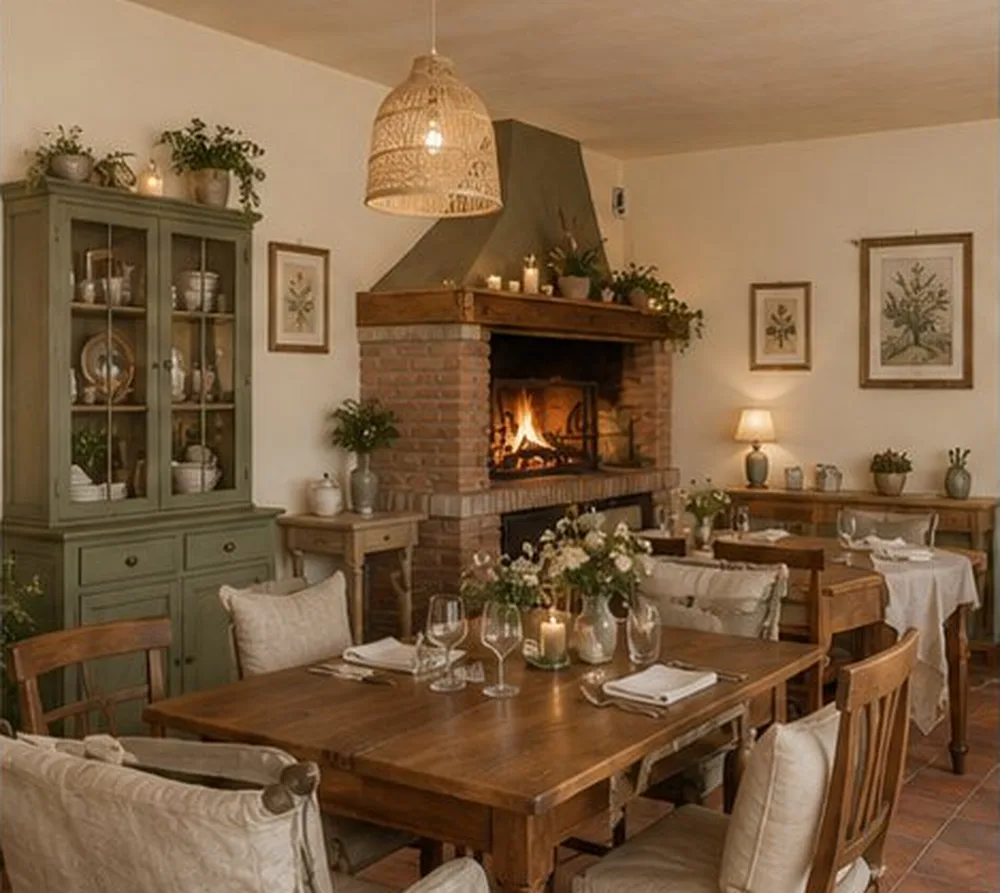
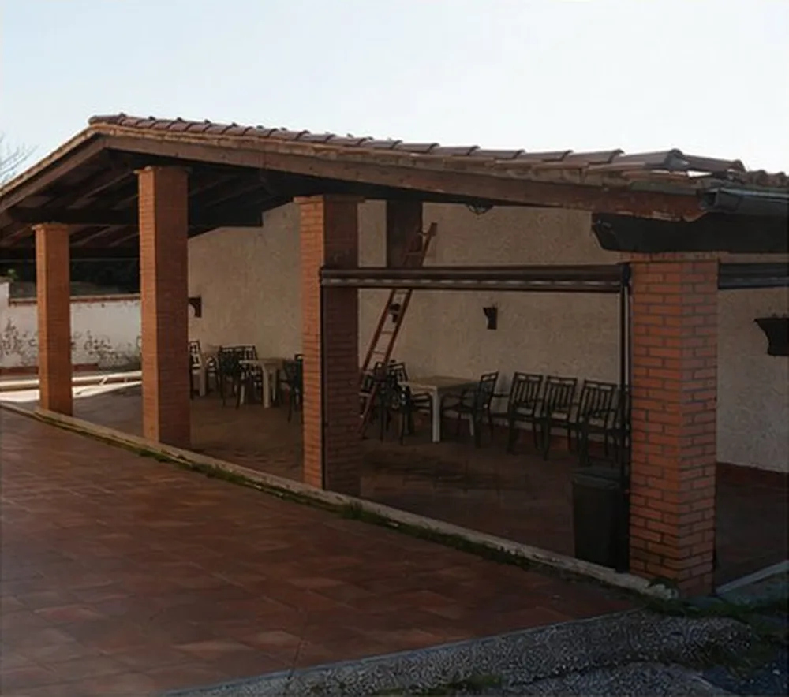
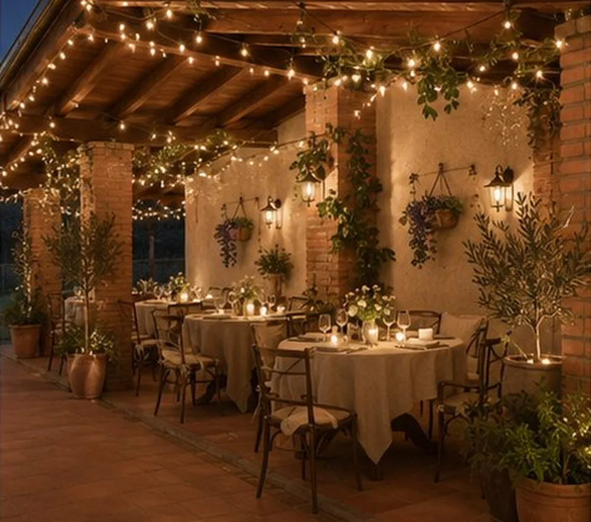
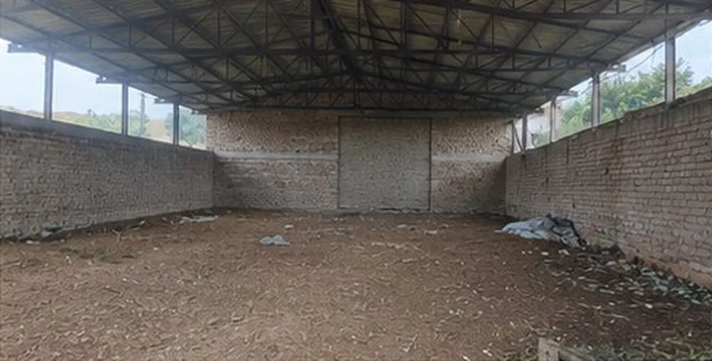
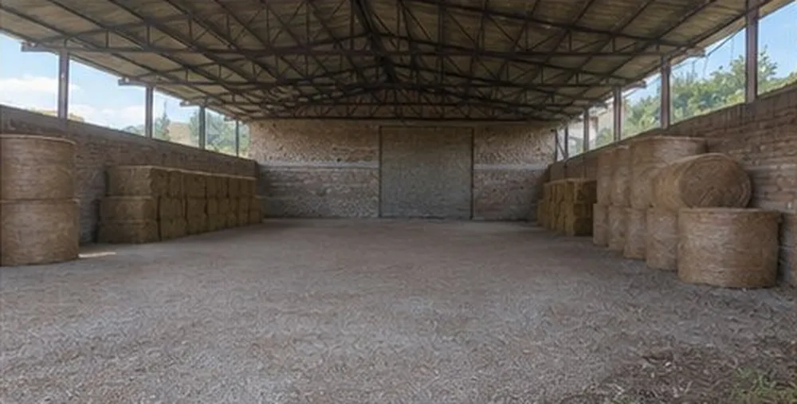

Boutique agriturismo
Refreshed rooms, a kitchen built on the farm's own produce and estate olive oil, countryside experiences for guests from Rome and abroad.

For sale · Riano, Colle delle Rose · 25 km from Rome
Twenty-one hectares of hillside with an 8-room agriturismo, a licensed farm company, four apartments and over 1,600 m² of farm buildings. All in one piece, half an hour from the centre of Rome.
Asking €869,000 · 14% below the market appraisal
The opportunity
North of Rome, between the Via Flaminia and the Tiber valley, Colle delle Rose is one of the few farm estates over twenty hectares still intact this close to the capital.
A buyer does not start from scratch. The estate comes with a farm company licensed for agritourism, food service and butchery, a furnished restaurant for about 70 guests, 8 guest rooms, four apartments and large farm buildings ready for conversion.
The asking price sits below the market appraisal. That margin stays with the buyer and can fund the transformation: a boutique agriturismo, a wedding and events venue, an equestrian centre, wellness retreats. Or simply hold the land as a store of value near Rome.
Price
A July 2025 market appraisal by an agency specialising in farmland and agricultural businesses values the land and buildings at over one million euros. The asking price is €869,000.
Land €689,469 · buildings €325,500. The appraisal is subject to an on-site survey; full details are in the dossier.
The estate
The land rolls gently, with open meadows, hedgerows and woodland along the streams. An olive-lined drive climbs from the road to the cluster of buildings, set on the most panoramic point of the property.
8 guest rooms, furnished restaurant with fireplace, breakfast room and covered veranda.
Four units of 76, 77, 85 and 90 m² (cadastral), for the family, staff or extra guest rooms.
One large open volume, suited to a stable block, an indoor arena or an events space.
Exposed tuff-stone walls, tall and open: the building with the most character on the estate.
Machinery and tool storage, or a workshop for olive oil, meat and farm produce.
Agritourism, food service and butchery: the hardest part to recreate from scratch.
Explore the estate

The agriturismo
An estate's value also lies in what is already able to earn. Tables, chairs, dressers and the fireplace are in place. Reopening takes weeks, not years of building work.
Location
Riano lies in the Tiber valley, north of the capital. The estate sits between the Via Flaminia and Via Codette, just above the Roman Arch of Malborghetto. Rome is close, yet all around are hills, olive groves and woods.
Potential
Land, restaurant, stable and barn can be combined into one destination with several income streams. The four models work alone or together.
Refreshed rooms, a kitchen built on the farm's own produce and estate olive oil, countryside experiences for guests from Rome and abroad.
The existing dining room, the veranda and the meadows with hill views. The tuff barn could become a covered reception hall. Weddings and corporate events 30 minutes from Rome.
The 750 m² stable becomes a stable block with boxes. Twenty-one hectares give paddocks and trails for livery, a riding school and horseback tourism.
Yoga, retreats and slow travel: Romans increasingly look for quiet places like this, close to the city.
Twenty-one hectares 25 km from Rome are increasingly rare. The land can be let to a farmer on multi-year terms while every future option stays open, with low running costs.
Before and after
Existing floors stay and no structural work is needed. The change comes from textiles, lighting, colour and furnishings. The "after" images are illustrative photo simulations.


TodayAfter

TodayAfter

TodayAfterDrag the slider to move from today to after.
Keep the wooden furniture and the floors. Natural textiles, warm lighting, prints and neutral colours are enough to open up every room.
Pale tones, natural fibres, rattan lamps and potted olive trees. The rooms feel lighter and closer to the design B&Bs city travellers look for.
Fine fabrics, chosen pieces and a palette of sage, beige and cream. The right positioning for weddings, romantic weekends and premium hospitality around Rome.
Paint, a tidy courtyard and some planting are enough to change the face of the hamlet. The stable and barn first need their asbestos-cement roofs removed. Once that is done and the roofs are rebuilt, their volumes can be used again.
Both are already registered as agricultural buildings (cadastral category D/10). Any change of use must be agreed with the municipality.
Costs, rates and timings are indicative estimates, to be confirmed with a project and the required permits.
Simulator
Move the sliders to see how yearly gross revenue from rooms and events changes. The calculation starts from the 8 existing rooms and the dining room.
Indicative simulation: excludes à la carte dining, produce sales, horse livery and running costs. It is not an income forecast.
Video tour
Gallery
Key facts
Below are the main land registry data and the points to be aware of. Floor plans, registry extracts and full documentation are in the private dossier.
| Parcel | Use | m² |
|---|---|---|
| 617 | Arable | 121,917 |
| 619 | Arable | 33,092 |
| 14 | Coppice woodland | 13,450 |
| 290 | Arable | 12,550 |
| 287 | Arable | 12,465 |
| 288 | Arable | 6,760 |
| 621 | Arable | 4,919 |
| 285 | Arable | 1,875 |
| 286 | Arable | 690 |
| 20 · 21 · 22 | Arable and woodland | 1,212 |
| Total | 208,930 |
| Parcel | Category | m² |
|---|---|---|
| 225/500 | A/4 · dwelling | 77 |
| 225/501 | A/4 · dwelling | 90 |
| 225/1 | A/4 · dwelling | 85 |
| 225/2 | A/4 · dwelling | 76 |
| 225/4 · 226/1 · 299 · 324–327 | D/10 · farm buildings | — |
Asbestos roofs. The stable and barn roofs are asbestos-cement and must be removed and disposed of by a licensed contractor. It is a cost to plan for; afterwards the volumes are free to use.
Farming activity. To cultivate the land with the available farm benefits, the farm company must be active.
Pre-emption rights. As with any sale of Italian farmland, neighbouring farmers with pre-emption rights must be notified before completion.
FAQ
In Colle delle Rose, municipality of Riano (province of Rome), between the Via Flaminia and Via Codette, about 25 km north of central Rome. Vehicle access is from Via Colle delle Rose.
The asking price is €869,000. A July 2025 market appraisal values the land at €689,469 and the buildings at €325,500, for a total of over one million euros.
208,930 m² of land, the agriturismo with 8 rooms and its restaurant, four apartments, stable, barn, warehouse and the other farm buildings, together with the farm company and its licences for agritourism, food service and butchery.
Yes. EU citizens buy on the same terms as Italians, and most non-EU buyers can purchase under reciprocity agreements. You will need an Italian tax code (codice fiscale); we can put you in touch with English-speaking notaries and advisers.
The asbestos-cement roofs of the stable and barn must be removed. Everything else is up to the buyer's project: interior refresh, courtyard works, conversion of the farm buildings.
The dining room, veranda and grounds suit receptions and private events. A regular events business needs permits from the municipality and a plan to adapt the spaces.
Fill in the form below or message us on WhatsApp. After a short call we send the technical dossier and arrange a guided visit, weekends included.
Contact
The dossier includes floor plans, registry extracts, high-resolution photos and the full appraisal. We send it to serious buyers after a first contact. We speak English.